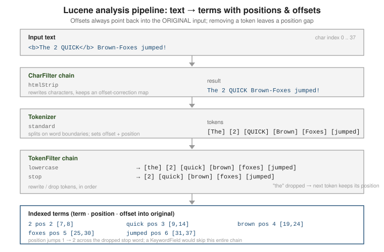

Analysis pipeline: Analyzer, TokenStream & attributes
|
This content was generated with the assistance of AI and should be verified against the official documentation before being relied on in production. |
An Analyzer is the factory that produces the TokenStream Lucene consumes when it indexes a text
field and, by default, when it parses a query. The stream is assembled from an optional chain of
character filters, exactly one tokenizer, and an optional chain of token filters, and each token
it emits carries a bundle of attributes — the term text, its character offsets, its position. This
page covers how the pipeline is wired, its lifecycle, and the attribute API.
Analyzer: createComponents and normalize
A concrete Analyzer implements createComponents(String fieldName), returning a
TokenStreamComponents that bundles the source Tokenizer with the (possibly wrapped) final
TokenStream. Lucene calls this once per field per thread and then reuses the components for
subsequent values of that field, resetting the chain each time. normalize(String, TokenStream) is
the lighter partner path: it applies only the analyzer’s character-level normalisation (lowercasing,
ASCII folding) and never splits or drops anything. The query parsers use it for the terms they must not tokenize — wildcard, prefix, fuzzy and range terms — so that Fox* becomes the prefix fox* against a lowercased index. A
TermQuery that you build yourself is not analyzed or normalized at all. Calling normalize directly
shows the effect: analyzer.normalize("title", "Ünïcode ABC") returns the single value ünïcode abc for a
StandardAnalyzer, because lowercasing is applied but accent folding is not part of that analyzer.
// https://lucene.apache.org/core/10_0_0/core/org/apache/lucene/analysis/Analyzer.html
Analyzer analyzer = new Analyzer() {
@Override
protected TokenStreamComponents createComponents(String fieldName) {
Tokenizer source = new StandardTokenizer();
TokenStream result = new LowerCaseFilter(source);
result = new StopFilter(result, EnglishAnalyzer.getDefaultStopSet());
return new TokenStreamComponents(source, result);
}
@Override
protected TokenStream normalize(String fieldName, TokenStream in) {
return new LowerCaseFilter(in); // no tokenization: keep it one token
}
};The CharFilter → Tokenizer → TokenFilter chain
The three stages always run in this order:
-
Character filters (
CharFilter, zero or more) — rewrite the raw character stream before tokenization while tracking a correction map so final offsets still point into the original text. Example:HTMLStripCharFilter,MappingCharFilter. -
Tokenizer (
Tokenizer, exactly one) — consume the characterReaderand break it into tokens, recording each token’s start/end offset and position. Example:StandardTokenizer,WhitespaceTokenizer,KeywordTokenizer. -
Token filters (
TokenFilter, zero or more) — add, drop or rewrite tokens in order:LowerCaseFilter,StopFilter,SynonymGraphFilter, a stemmer.
Token filters & recipes and
Built-in analyzers & CustomAnalyzer
cover the concrete components; the package overview is at
the
org.apache.lucene.analysis package summary.

TokenStream lifecycle and reuse
A TokenStream is a strict state machine. A consumer must call the four methods in order, exactly
once per pass:
-
reset()— rewind to the start before the firstincrementToken(). -
incrementToken()— advance to the next token, populating the shared attributes; returnsfalseat end of stream. -
end()— called after the last token to set end-of-stream state such as the final offset. -
close()— release the input; the stream can be re-reset()and used again for the next value.
Because Analyzer caches TokenStreamComponents per thread, the same stream objects are reused
across every value of a field — which is why reset() and end() exist and why a custom TokenFilter
must reset its own state in reset().
A custom filter and why reset() matters
Writing your own TokenFilter is mostly a matter of implementing incrementToken(). Two small examples show
the contract in action. The first drops tokens shorter than a minimum length by extending
FilteringTokenFilter, which handles position bookkeeping for you:
static final class MinLengthFilter extends FilteringTokenFilter {
private final int min;
private final CharTermAttribute term = addAttribute(CharTermAttribute.class);
MinLengthFilter(TokenStream in, int min) { super(in); this.min = min; }
@Override protected boolean accept() { return term.length() >= min; }
}Run over The Go programming language with a minimum length of four, the stream (printing term, position,
position increment, offsets and type) is:
programming pos=2 inc=3 len=1 offsets=[7,18) type=<ALPHANUM>
language pos=3 inc=1 len=1 offsets=[19,27) type=<ALPHANUM>
end(): final offset=27 trailing posInc=0programming sits at position 2 with an increment of 3: the filter removed two tokens before it (the and
go) and added their positions to the next surviving token, so phrase queries still see the original distances.
The second example is stateful — it keeps only the first two tokens of each value — and shows what goes wrong
when reset() is not overridden:
static final class FirstNFilter extends TokenFilter {
private final int n; private int seen;
FirstNFilter(TokenStream in, int n) { super(in); this.n = n; }
@Override public boolean incrementToken() throws IOException {
if (seen >= n) return false;
if (!input.incrementToken()) return false;
seen++;
return true;
}
@Override public void reset() throws IOException {
super.reset();
seen = 0; // without this line, the counter survives into the next value
}
}With reset() left out, the analyzer’s reused stream produced [alpha, beta] for the first value and then
[] for every later value, because the counter was never cleared. With seen = 0 in reset() the three values
alpha beta gamma delta, one two three and x y z produced [alpha, beta], [one, two] and [x, y]. This
is the bug class that BaseTokenStreamTestCase.checkRandomData is designed to catch (see
Built-in analyzers & CustomAnalyzer).
The contract is enforced at runtime
The state machine is not just documentation. Skipping reset() makes the first incrementToken() throw, and
creating a second stream before close() of the first fails too:
without reset() -> IllegalStateException: TokenStream contract violation: reset()/close() call missing,
reset() called multiple times, or subclass does not call super.reset().
missing close() -> IllegalStateException: TokenStream contract violation: close() call missingThe examples on this page use try-with-resources for that reason: TokenStream is Closeable, and the
end() call (which records the final offset) belongs just before the implicit close().
Stream reuse is real
Because Analyzer caches its components per thread, two consecutive calls to analyzer.tokenStream(...) return
the same object once the first has been closed. A test that compared the two instances printed true. Never
hold a TokenStream beyond the loop that consumes it, and never share one between threads.
One input, six built-in analyzers
The built-in analyzers differ mostly in three decisions: where to split, whether to lowercase and whether to drop words. Running one awkward string through each makes them concrete. The input is
The Lucene-in-Action book, 2nd ed.: Running e-mail@example.com's 3.5 tests!
| Analyzer | Terms produced |
|---|---|
|
|
|
|
|
|
|
the whole string as one term |
|
|
|
|
Reading across the rows is more instructive than any description. StandardAnalyzer follows Unicode word rules:
it keeps 3.5 and 2nd intact and breaks Lucene-in-Action at hyphens, but it keeps the
domain-looking example.com's as one token. SimpleAnalyzer and StopAnalyzer split on anything that is not a
letter, so 2nd becomes nd and the number 3.5 vanishes entirely — a good reason to avoid them on real data.
WhitespaceAnalyzer keeps punctuation glued to words (book,, tests!), which makes it right for already
tokenized input and wrong for prose. EnglishAnalyzer adds possessive removal, a stop list and the Porter
stemmer: Running becomes run, tests becomes test and Lucene becomes lucen, so query terms must be
stemmed the same way to match. Note that the default stop set of StandardAnalyzer is empty, so the and in stay.
Character filters and corrected offsets
A CharFilter rewrites characters before tokenization but keeps a correction map, so token offsets still point
into the original text. Stripping HTML from <b>Lucene</b> & Solr leaves two tokens whose offsets cover the
original markup exactly:
lucene pos=0 inc=1 len=1 offsets=[3,13) type=<ALPHANUM>
solr pos=1 inc=1 len=1 offsets=[20,24) type=<ALPHANUM>lucene starts at character 3 (just after <b>) and its end offset is 13, which lies after the closing </b>:
the offsets are corrected back into the original markup, which is the range a highlighter has to wrap. & produced no token at all because the filter decoded it to &, which the
tokenizer treats as a separator.
Where the analyzer is used: indexing and querying
At index time the IndexWriter consumes the stream of every TextField and writes each term with the
positions and offsets the field’s IndexOptions request. At query time the query parser (not
the IndexSearcher) consumes a stream for every term of free text and builds TermQuery, PhraseQuery or a
synonym-aware graph query from the result. Both sides must agree: an index built with EnglishAnalyzer
and searched through a StandardAnalyzer query parser looks for searching where the index holds search, and
the query silently returns nothing. Built-in analyzers & CustomAnalyzer
shows this failure with real counts on the catalog.
The attribute API
Tokens are not objects. A TokenStream extends AttributeSource: attribute instances are created
once with addAttribute(...), shared by the whole chain, and mutated in place on each
incrementToken(). The consumer reads whichever attributes it needs after each call.
| Attribute | Carries |
|---|---|
|
The token’s text (as a mutable char buffer). |
|
Start and end character offsets in the original input — what the |
|
Gap to the previous token: |
|
How many positions the token spans — |
|
The tokenizer’s classification, e.g. |
|
An arbitrary |
|
Marks a token as a keyword so downstream stemmers leave it untouched. |
Positions and offsets are what make later features possible: PhraseQuery and the
interval and span queries match on positions,
while offsets let the UnifiedHighlighter map a matched term back to a span of source characters
without re-analyzing.
// https://lucene.apache.org/core/10_0_0/core/org/apache/lucene/analysis/tokenattributes/package-summary.html
Analyzer analyzer = new StandardAnalyzer();
try (TokenStream ts = analyzer.tokenStream("body", "The 2 QUICK brown-foxes jumped")) {
var term = ts.addAttribute(CharTermAttribute.class);
var offset = ts.addAttribute(OffsetAttribute.class);
var posInc = ts.addAttribute(PositionIncrementAttribute.class);
int position = 0;
ts.reset();
while (ts.incrementToken()) {
position += posInc.getPositionIncrement();
System.out.printf("term=%-8s pos=%d offset=[%d,%d]%n",
term, position, offset.startOffset(), offset.endOffset());
}
ts.end();
}
// term=the pos=1 offset=[0,3]
// term=2 pos=2 offset=[4,5]
// term=quick pos=3 offset=[6,11]
// term=brown pos=4 offset=[12,17]
// term=foxes pos=5 offset=[18,23]
// term=jumped pos=6 offset=[24,30]Related pages
-
Built-in analyzers & CustomAnalyzer — the ready-made analyzers and building one from factory names.
-
Token filters & recipes — the concrete token filters and how to combine them.
-
Language analysis — stemming and per-language chains.
-
Highlighting, suggesters & more — how the
UnifiedHighlighteruses offsets. -
Elasticsearch: text analysis — the same chain, configured through mappings.
-
Solr: text analysis — the same chain, configured through the schema.
-
TokenStream Javadoc — the full lifecycle contract.